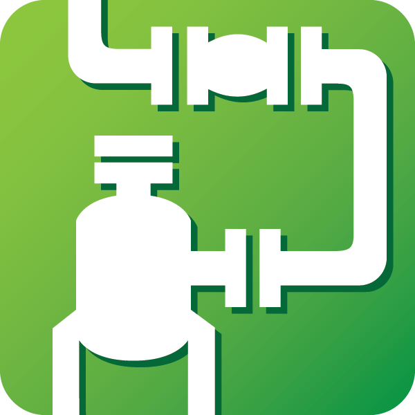
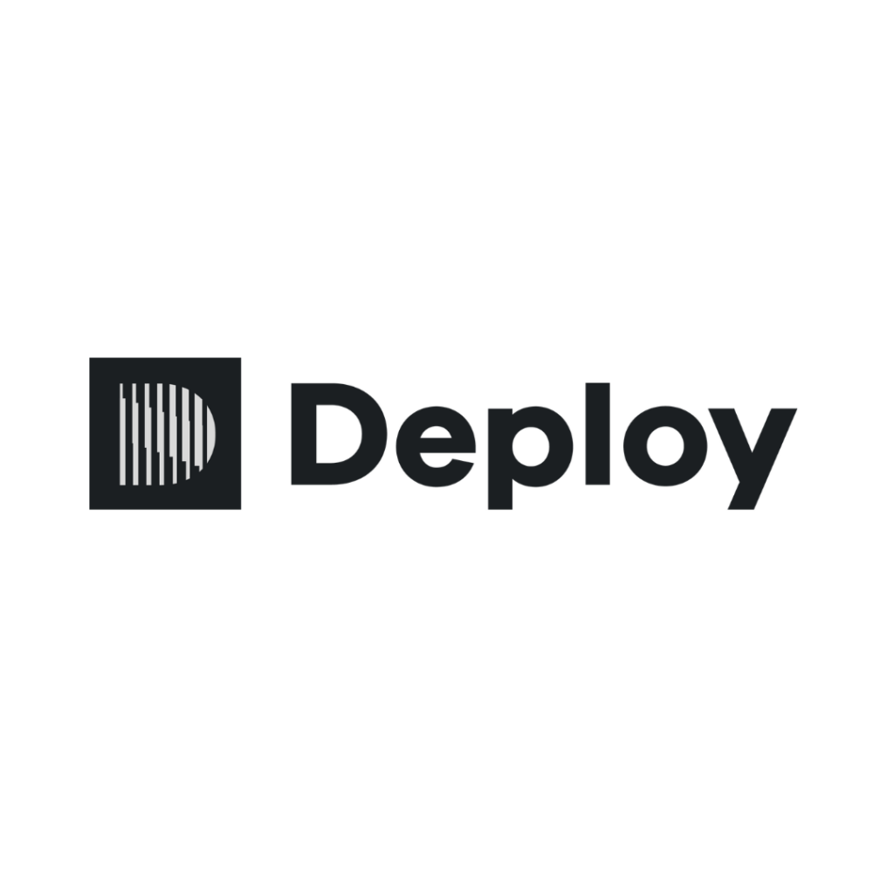
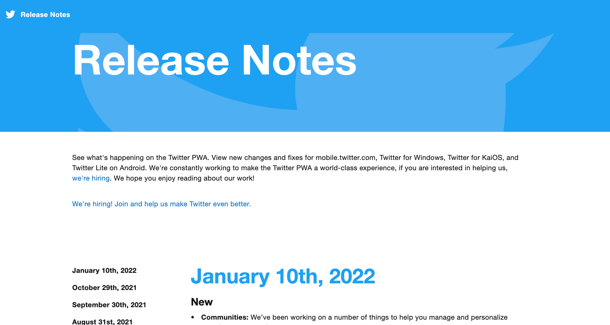
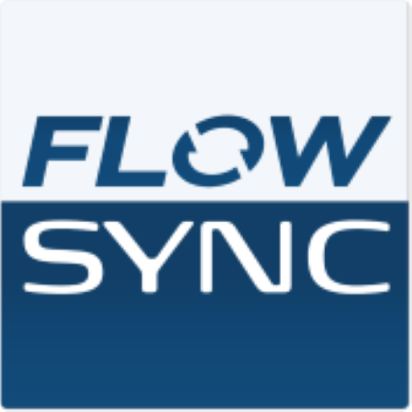
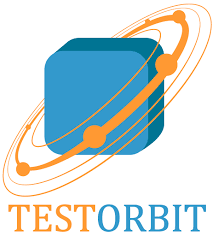

AutoPipe
Україна
- Автоматична побудова CI/CD-пайплайнів
- Інтеграція з GitHub, GitLab та Bitbucket
- Паралельне виконання тестів
- Сповіщення про збої в Slack
- Історія запусків та логи в реальному часі
Інструменти автоматизації, які ми розробляємо та підтримуємо для команд розробників.

Україна

Польща

Україна

Канада

Естонія